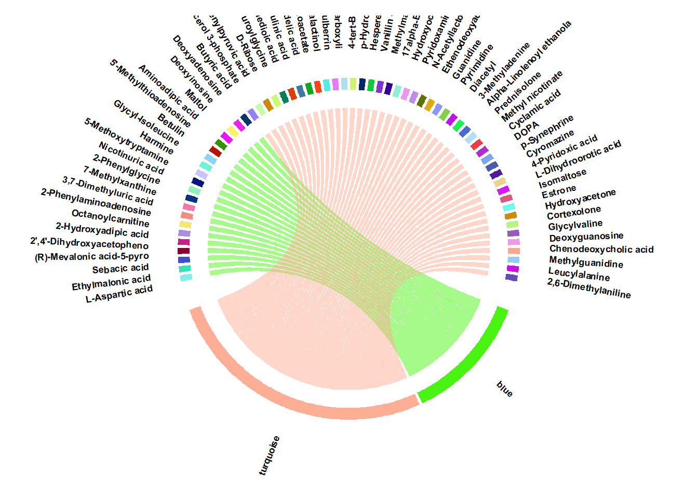

Section 8 Module Eigengene Differentiation
Description: This pipeline performs post-WGCNA analysis by testing whether module eigengenes significantly differentiate between phenotypic groups.It uses adaptive statistical testing (parametric or non-parametric) based on normality and number of groups to assess eigengene–phenotype associations. And The results are corrected for multiple testing using FDR Benjamini-Hochberg test.
Project Initialization
#Sets the working directory and creates subfolders for organizing outputs.
mypath= "C:/Users/USER/Documents/Github/CRC_project/"
dir.create("output")
dir.create("plots")
dir.create("input")#load packages
library(plyr)
library(dplyr)
library(tidyr)
library(purrr)
library(tibble)
library(tidyverse)
library(gridExtra)
library(gplots)
library(ggplot2)#load data
module_eigengenes= read.csv(paste0(mypath,"output/module_eigengenes.csv")) %>% column_to_rownames("X")
data= read.csv(paste0(mypath,"input/data_for_downstream.csv"))
data = data %>% column_to_rownames(colnames(data)[1])
dir= paste0(mypath, "output/")
group_dist= gsub("_.*", "", colnames(data))
group_levels= unique(group_dist)8.1 Function for Module eigengene differentiation
# A function that apply the appropriate statistical test based on
# normality and number of groups to assess differential expression
# of module eigengenes (first principal components) between groups.
test_differentiation <- function(module_eigengenes, group_vector, output_path = NULL) {
check_normality <- function(vector) {
x <- as.numeric(vector)
x <- x[!is.na(x)]
if (length(x) <= 3) {
return("Non-parametric")
}
result <- tryCatch(shapiro.test(x), error = function(e) return(NULL))
if (is.null(result)) return("Non-parametric")
if (result$p.value > 0.05) "Parametric" else "Non-parametric"
}
# Prepare group information
group_vector <- as.factor(group_vector)
group_levels <- levels(group_vector)
n_groups <- length(group_levels)
mods <- colnames(module_eigengenes)
results_list <- list()
for (mod in mods) {
x <- module_eigengenes[[mod]]
test_type <- check_normality(x)
if (n_groups == 2) {
if (test_type == "Parametric") {
res <- t.test(x ~ group_vector)
test_used <- "t-test"
} else {
res <- wilcox.test(x ~ group_vector)
test_used <- "Wilcoxon"
}
p <- res$p.value
} else if (n_groups > 2) {
if (test_type == "Parametric") {
res <- aov(x ~ group_vector)
p <- summary(res)[[1]][["Pr(>F)"]][1]
test_used <- "ANOVA"
} else {
res <- kruskal.test(x ~ group_vector)
p <- res$p.value
test_used <- "Kruskal-Wallis"
}
} else {
p <- NA
test_used <- "Invalid group size"
}
results_list[[mod]] <- list(p.value = p, test = test_used)
}
# Convert results to a data frame
res_df <- do.call(rbind, lapply(names(results_list), function(mod) {
row <- results_list[[mod]]
data.frame(modules = mod, p.value = row$p.value, test = row$test)
}))
# Adjust FDR
res_df$fdr <- p.adjust(res_df$p.value, method = "BH")
res_df$sig <- ifelse(res_df$fdr <= 0.05, "***", "")
res_df$module <- gsub("ME", "", res_df$module)
# Save if path is provided
if (!is.null(output_path)) {
write.csv(res_df,paste0(output_path ,"ME_differentiation.csv") , row.names = FALSE)
}
return(res_df)
}
res= test_differentiation(module_eigengenes, group_dist, dir)
head(res)## modules p.value test fdr sig module
## 1 MEblue 1.082509e-05 Wilcoxon 2.165018e-05 *** blue
## 2 MEbrown 7.959363e-01 Wilcoxon 7.959363e-01 brown
## 3 MEturquoise 1.082509e-05 Wilcoxon 2.165018e-05 *** turquoise
## 4 MEgrey 3.930481e-01 Wilcoxon 5.240642e-01 grey8.2 Horizontal Bar plot
p= ggplot(res) +
geom_bar(aes(x = modules, y = -log10(fdr), fill = module), stat = "identity") +
coord_flip() + # Flip coordinates to make the bar plot horizontal
scale_fill_identity() + # Use actual colors specified in the data frame
geom_text(aes(x = modules , y =-log10(fdr) , label = sig),
position = position_dodge(width = 0.9), vjust = -0.5, size=.5 ,color = "black") +
theme_minimal() +
labs(y = "-log10(FDR)", x = "Modules") +
ggtitle("Module Eigengene Differentiation") + # Label axes and provide a title
theme(legend.position = "none",
plot.title = element_text(hjust = 0.5, size = 12),
axis.text = element_text(size=12),
axis.title=element_text(size=13) ) +
ylim(0,12) +
geom_hline(yintercept = -log10(0.05), linetype = "dashed", color = "black", lwd= 1)
print(p)8.3 Chord plot of hubgenes and corresponding modules
module_hubs= read.csv(paste0(mypath,"output/module_hubs.csv"))
colnames(module_hubs)=gsub("_hub", "", names(module_hubs) )
# We can plot only the hub features of significant modules (Module differentiation output)
module_sig= read.csv(paste0(mypath,"output/ME_differentiation.csv"))
m.sig= module_sig$module[module_sig$sig== "***"]
module_hubs= module_hubs |> dplyr::select(m.sig)
#build similarity/ design matrix
keydrivers= unlist(module_hubs) |> unique()
keydrivers= keydrivers[keydrivers != "" & !is.na(keydrivers)]
mtx= matrix(nrow= ncol(module_hubs), ncol = length( keydrivers))
row.names(mtx)= colnames(module_hubs)
colnames(mtx)= paste0(keydrivers)
#build similarity matrix
#colnames of matrix included in keydrivers specified for certain module/ phenotype(rows) then put in 1
mod= apply(module_hubs, 2, function(x) as.list(x))
for (i in seq_along(mod)){
for (j in 1:ncol(mtx)) {
if ( colnames(mtx)[j] %in% mod[[i]] ) {
mtx[i, j] <- 1
} else {
mtx[i, j] <- 0
}
}
}
# make shorter row names
colnames(mtx)= substr(colnames(mtx), 1, 25)
library(circlize)
# Define chord plot function
plot_chord_hubs <- function() {
par(cex = 0.8, mar = c(1, 1, 1, 1))
circos.par(
gap.degree = 1,
track.margin = c(0.05, 0.05),
canvas.xlim = c(-1.2, 1.2),
canvas.ylim = c(-1.2, 1.2),
points.overflow.warning = FALSE
)
chordDiagram(
mtx,
annotationTrack = "grid",
transparency = 0.5
)
# Labels customization
labels_to_asterisk <- NULL # Example: c("TP53", "MYC")
labels_red <- NULL # Example: c("BRCA1", "EGFR")
circos.track(track.index = 1, panel.fun = function(x, y) {
label <- CELL_META$sector.index
modified_label <- ifelse(label %in% labels_to_asterisk,
paste0(label, " ***"),
label)
label_color <- ifelse(label %in% labels_red, "red", "black")
circos.text(
CELL_META$xcenter,
CELL_META$cell.ylim[2] * 3.5,
modified_label,
col = label_color,
cex = 0.7,
font = 2,
facing = "clockwise",
niceFacing = TRUE,
adj = c(0, 0)
)
}, bg.border = NA)
circos.clear()
}
# Display
plot_chord_hubs()
# Save
png(paste0(mypath,"plots/chord_plot_hubs.png"), width = 9000, height = 9000, res = 600)
plot_chord_hubs()
dev.off()## png
## 2## R version 4.4.1 (2024-06-14 ucrt)
## Platform: x86_64-w64-mingw32/x64
## Running under: Windows 10 x64 (build 19045)
##
## Matrix products: default
##
##
## locale:
## [1] LC_COLLATE=English_United States.utf8
## [2] LC_CTYPE=English_United States.utf8
## [3] LC_MONETARY=English_United States.utf8
## [4] LC_NUMERIC=C
## [5] LC_TIME=English_United States.utf8
##
## time zone: Africa/Cairo
## tzcode source: internal
##
## attached base packages:
## [1] grid stats graphics grDevices utils datasets methods
## [8] base
##
## other attached packages:
## [1] gplots_3.1.3.1 gridExtra_2.3 flashClust_1.01-2
## [4] ggdendro_0.2.0 ape_5.8 pROC_1.18.5
## [7] gtools_3.9.5 WGCNA_1.72-5 fastcluster_1.2.6
## [10] dynamicTreeCut_1.63-1 ggrepel_0.9.6 viridis_0.6.5
## [13] fields_16.2 viridisLite_0.4.2 spam_2.10-0
## [16] biomaRt_2.61.2 ComplexHeatmap_2.21.0 circlize_0.4.16
## [19] RColorBrewer_1.1-3 memoise_2.0.1 caret_6.0-94
## [22] lattice_0.22-6 pls_2.8-3 Rserve_1.8-13
## [25] MetaboAnalystR_3.2.0 cowplot_1.1.3 DT_0.33
## [28] openxlsx_4.2.6.1 lubridate_1.9.3 forcats_1.0.0
## [31] stringr_1.5.1 purrr_1.0.2 readr_2.1.5
## [34] tidyr_1.3.1 ggplot2_3.5.1 tidyverse_2.0.0
## [37] dplyr_1.1.4 plyr_1.8.9 tibble_3.2.1
##
## loaded via a namespace (and not attached):
## [1] matrixStats_1.3.0 bitops_1.0-7 httr_1.4.7
## [4] doParallel_1.0.17 tools_4.4.1 backports_1.5.0
## [7] R6_2.5.1 lazyeval_0.2.2 GetoptLong_1.0.5
## [10] withr_3.0.0 prettyunits_1.2.0 preprocessCore_1.67.0
## [13] cli_3.6.3 Biobase_2.64.0 textshaping_0.4.0
## [16] Cairo_1.6-2 labeling_0.4.3 sass_0.4.9
## [19] proxy_0.4-27 systemfonts_1.2.3 foreign_0.8-86
## [22] siggenes_1.79.0 parallelly_1.38.0 scrime_1.3.5
## [25] maps_3.4.2 limma_3.61.5 rstudioapi_0.16.0
## [28] impute_1.79.0 RSQLite_2.3.7 generics_0.1.3
## [31] shape_1.4.6.1 RApiSerialize_0.1.3 crmn_0.0.21
## [34] crosstalk_1.2.1 zip_2.3.1 GO.db_3.19.1
## [37] Matrix_1.7-0 S4Vectors_0.42.1 lifecycle_1.0.4
## [40] yaml_2.3.10 edgeR_4.3.5 recipes_1.1.0
## [43] BiocFileCache_2.13.0 blob_1.2.4 crayon_1.5.3
## [46] KEGGREST_1.45.1 magick_2.8.4 pillar_1.11.0
## [49] knitr_1.48 fgsea_1.31.0 rjson_0.2.21
## [52] future.apply_1.11.2 codetools_0.2-20 fastmatch_1.1-4
## [55] glue_1.7.0 pcaMethods_1.97.0 data.table_1.15.4
## [58] vctrs_0.6.5 png_0.1-8 gtable_0.3.5
## [61] cachem_1.1.0 gower_1.0.1 xfun_0.46
## [64] prodlim_2024.06.25 survival_3.6-4 timeDate_4032.109
## [67] iterators_1.0.14 hardhat_1.4.0 lava_1.8.0
## [70] statmod_1.5.0 ipred_0.9-15 nlme_3.1-164
## [73] bit64_4.0.5 progress_1.2.3 filelock_1.0.3
## [76] GenomeInfoDb_1.41.1 bslib_0.8.0 KernSmooth_2.23-24
## [79] rpart_4.1.23 colorspace_2.1-1 BiocGenerics_0.52.0
## [82] DBI_1.2.3 Hmisc_5.1-3 nnet_7.3-19
## [85] tidyselect_1.2.1 bit_4.0.5 compiler_4.4.1
## [88] curl_5.2.1 httr2_1.0.2 htmlTable_2.4.3
## [91] xml2_1.3.6 plotly_4.10.4 stringfish_0.16.0
## [94] bookdown_0.40 checkmate_2.3.1 scales_1.3.0
## [97] caTools_1.18.2 rappdirs_0.3.3 digest_0.6.36
## [100] rmarkdown_2.27 XVector_0.44.0 htmltools_0.5.8.1
## [103] pkgconfig_2.0.3 base64enc_0.1-3 highr_0.11
## [106] dbplyr_2.5.0 fastmap_1.2.0 rlang_1.1.4
## [109] GlobalOptions_0.1.2 htmlwidgets_1.6.4 UCSC.utils_1.1.0
## [112] farver_2.1.2 jquerylib_0.1.4 jsonlite_1.8.8
## [115] BiocParallel_1.39.0 ModelMetrics_1.2.2.2 magrittr_2.0.3
## [118] Formula_1.2-5 GenomeInfoDbData_1.2.12 dotCall64_1.1-1
## [121] munsell_0.5.1 Rcpp_1.0.13 stringi_1.8.4
## [124] zlibbioc_1.50.0 MASS_7.3-60.2 parallel_4.4.1
## [127] listenv_0.9.1 Biostrings_2.72.1 splines_4.4.1
## [130] multtest_2.61.0 hms_1.1.3 locfit_1.5-9.10
## [133] igraph_2.0.3 reshape2_1.4.4 stats4_4.4.1
## [136] evaluate_0.24.0 RcppParallel_5.1.8 tzdb_0.4.0
## [139] foreach_1.5.2 qs_0.26.3 future_1.33.2
## [142] clue_0.3-65 e1071_1.7-14 glasso_1.11
## [145] class_7.3-22 ragg_1.3.2 AnnotationDbi_1.67.0
## [148] ellipse_0.5.0 IRanges_2.38.1 cluster_2.1.6
## [151] timechange_0.3.0 globals_0.16.3